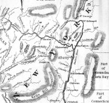
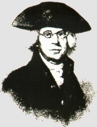
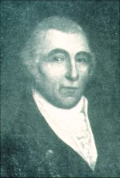
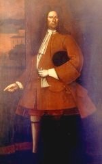

|
On the eve of the American Revolution, most of the 2.5 million American settlers were scattered across a vast and verdant landscape, produced
 much of what they needed, and thought of themselves as farmers and family members with much more conviction than as parts of any political entity such as a colony, town, or a city. Survival and welfare drove early American life and diversely constituted provincial people were reluctant to commit to any obligating association without good reason and only after serious soul searching.
An alternative and clearly minority early American lifestyle involved numbers of people converging on strategic locations and situations, producing only part of what they needed, and relying on others for the things that their rural counterparts made and did for themselves. Strategically situated, they then would be able to market their own and collected goods and services to the
highest bidder. These people lived together in towns and cities. Although they represented only a small part of early American society, new communities were founded throughout the 17th and 18th centuries - and all of them were growing. Colonial Albany was one of the oldest American communities. From the time fur traders began to come together north of Fort Orange during the 1640s, the resulting concentration of human and economic resources fed ambition and fostered enterprise. By the time Beverwyck became Albany in 1664, the first generation of New Netherland Dutch had emerged at the commercial heart of a developing market region defined by the Hudson and Mohawk River valleys. Ambition and enterprise
created an increasingly competitive business climate. Inevitably, competition
led to conflicts. Beginning in 1652, disagreements could be resolved before
a court of magistrates established by Dutch governor Peter Stuyvesant. Before
long, however, the Beverwyck/Albany traders realized that ground rules were
needed to rationalize behavior and order opportunity and also that the community
needed to take charge of its internal growth and development. The first court
arbitrated disputes. But increasingly it was called on to pass judgment on the
way that the community was developing. The Beverwyck magistrates were prominent local fur traders and some West India
Company and government officials - all appointed by Governor Stuyvesant. After
1664, the English continued the practice of the governor selecting important
upriver figures as magistrates - although they no longer included West India
Company representatives. By the mid-1670s, the Albany court was composed of
Albany's commercial leaders and officers at the new English fort. However, their judicial function
was being challenged by the emergence of Albany as a pre-industrial center as
issues of community development, health, and safety were beginning to take center
stage. The solution came
in the municipal charter granted in 1686. That document
incorporated the city of Albany - empowering it to make all laws necessary.
The charter invested this power in a defined group of local leaders called the
Albany Corporation. Until the 1820s, this small group of men who are popularly remembered as
"burghers" or "city fathers" controlled the public sphere of city life. Even
though the governor appointed citywide officers, until the 1800s these men were Albany's grass roots leaders. With a few notable exceptions, their experiences reached deeply into the heart of the community. The eleven members of the city Corporation represented Albany's commercial
elite. They were primarily merchant and traders - although some of them also
would be called producers, providers, and professionals. These individuals had a great stake in the community's well being and the charter had given the corporation complete control over almost all phases of city life. In 1686, Governor Dongan began a long-standing practice of selecting an outstanding and cooperative Albany businessman as mayor with the appointment of thirty-two year old Pieter Schuyler, Albany's favorite son and an emerging trader, contractor, and landholder. Schuyler was the first of thirty Albany men named
to the mayor's office before 1800. All but six of them were of New Netherland
Dutch background and only Edward Holland
had no ancestor in Albany in 1686. Most of them served only a year or two and
all but the earliest mayors previously had been elected to the Common Council. first posted: 1999; last revised 9/21/15 |